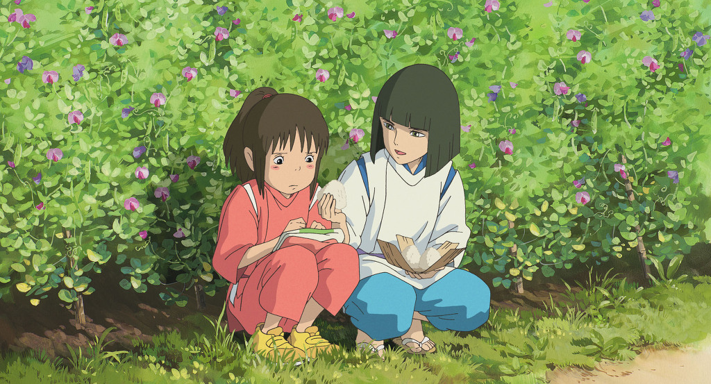

평범한 여고생 '하루'. 매일매일이 따분하기만 하고 즐거운 일이 하나도 없다. 그날은 늦잠 자서 학교도 지각하고 친구들 앞에서 창피까지 당하고 정말 우울한 날이었다. 그런 날, 집에 가는 길에 우연히 트럭에 치일 뻔한 고양이를 구해주었는데 그 고양이가 몸을 툴툴 털고 일어나 고맙다고 인사를 하는 게 아닌가. 그 순간부터 그녀의 일상은 변화가 생겼다. '하루'가 구해준 고양이가 고양이 왕국의 '룬'왕자라는 것이다. 그날 밤 '하루'의 집에 찾아온 고양이 떼는 자신들의 왕자를 구해준 보답으로 '룬'왕자와 결혼해달라는 요청과 함께 앞으로는 행복한 일들만 일어날 것이라는 이상한 말을 남긴 채 사라지게 되는데...
2. 귀를 기울이면 (1995, 평점: 9.14 ☆☆☆☆☆)

독서를 좋아하는 중학교 3학년 '츠키시마 시즈쿠'. 아버지가 근무하는 도서관에 자주 다니는 '시즈쿠'는, 어느 날 자신이 읽고자 하는 책을 '아마사와 세이지'란 사람이 먼저 읽었다는 것을 깨닫는다. '아마사와 세이지'가 같은 학교의 동급생이라는 것을 금방 알게 되지만 여전히 '세이지'에 대한 의문은 남는다. 어느 날, '시즈쿠'는 도서관으로 가다 신비한 가게를 마주치게 되고 그 곳에서 '세이지'의 할아버지를 만나게 된다. 그는 지하공방에서 바이올린을 만들고 있다. 그런 할아버지를 따라 '세이지'는 바이올린 장인이 되기 위해 이탈리아로 유학가고 싶다는 꿈을 꾸고 있었다. 확고한 목표를 갖고 있는 '세이지'에 비해 앞으로 어떤 목표가 없는 '시즈쿠'. 그런 '시즈쿠'는 자신의 꿈을 찾기 위해 이야기를 쓰기 시작하는데...
3. 마녀 배달부 키키 (1989, 평점: 9.45 ☆☆☆☆☆)

13세가 된 견습 마녀는 어엿한 마녀가 되기 위해서 다른 마을에 가서 1년 동안 부모를 떠나 자립해서 수행해야 한다. 마침 주인공 '키키'는 13세가 되어 마을을 찾아 여행을 떠나고, 커다란 마을에 도착한다. 하지만 그곳에 마녀를 반겨주는 사람은 없었고 '키키'는 풀죽어 마을을 헤매다 마음씨 좋은 빵집 주인 '오소노'를 만나게 된다. 그 빵집에서 살게 된 '키키'는, 빗자루 타는 능력을 활용해 택배 사업을 돕는다. 이런 와중, 하늘을 나는 것에 관심이 많은 소년 '톰보'와 자상한 성격의 할머니, 자유분방한 소녀 화가 '우르슬라' 등을 만나면서 '키키'는 점점 성장해 나가는데…
4. 마루 밑 아리에티 (2010, 평점: 8.17 ☆☆☆☆)

교외에 위치한 오래된 저택의 마루 밑에는 인간들의 물건을 몰래 빌려 쓰며 살아가는 소인들이 살고 있다. 그들 세계의 철칙은 인간에게 정체를 들키면 그 집을 당장 떠나야 한다는 것! 14살이 된 10cm 소녀 '아리에티'는 부모님의 도움 없이 홀로 마루 위 인간 세상으로 뛰어든다. 첫 작업 목표는 각설탕. 생쥐와 바퀴벌레의 방해 공작에도 무사히 주방에서 각설탕을 손에 넣은 '아리에티'는, 두 번째 목표인 티슈를 얻으러 간 방에서 저택에 요양을 온 인간 소년 '쇼우'의 눈에 띄게 된다. 인간은 무서운 존재라고 생각했던 것과 달리 '쇼우'의 다정한 모습에 조금씩 마음을 열기 시작한 '아리에티'. 마루 밑 세계의 규칙을 어기고 '쇼우'에게 다가가던 어느 날, '아리에티' 가족에게 예기치 않은 위험이 찾아온다. 인간들의 눈에 띄어서는 안되는 마루 밑 세계, 규칙을 어기고 인간 세상에 뛰어든 '아리에티'는 과연...
5. 모노노케 히메 / 원령공주 (1997, 평점: 9.36 ☆☆☆☆☆)

필사적으로 숲을 지키려는 대자연의 신들과 인간들과의 피할 수 없는 싸움이 시작된다. 북쪽의 끝, 에미시족의 마을에 어느 날 갑자기 재앙신이 나타나 마을을 위협한다. 이에 에미시족의 후계자인 '아시타카'는 결투 끝에 포악해진 재앙신을 쓰러뜨리지만, 싸움 도중 오른팔에 저주의 상처를 받고 죽어야 할 운명에 처하게 된다. 결국, 재앙신의 탄생 원인을 밝혀 자신의 저주를 없애기 위해 서쪽으로 길을 떠난 '아시타카'. 그는 여행 중 서쪽 끝 '시시'신의 숲에서 들개 신과 사투를 벌인 타타라 마을 사람들을 발견하고는 그들을 구해준다. 그 때, 먼발치서 자신을 지켜보는 들개 신 '모로'와 그의 곁에서 상처를 치료해주는 신비스러운 소녀를 보게 되고 묘한 느낌을 받게 된다. 귀빈 대접을 받으며 타타라 마을에 머물게 된 '아시타카'는 마을을 습격하는 '원령공주'를 목격하게되고 그 '원령공주'가 바로 숲에서 만난 소녀임을 알고 당황하게 되는데...
6. 바람 계곡의 나우시카(1984, 평점: 9.29 ☆☆☆☆☆)
극한의 과학 문명이 "불의 7일간"이라 불린 마지막 전쟁에서 거신병들에 의해 멸망하고 천 년이 지난 시대. 각지에는 부해(腐海)라 불리는 숲과 거기에서 날아오는 유독한 포자로 인해 인류는 점점 쇠퇴해가고 있었다. 바다에서 불어오는 바람의 도움으로 부해의 피해를 입지 않고 있던 바람계곡. 그 곳에는 바람을 읽고 부해에서 사람들을 돌보며 살아가는 공주 '나우시카'가 있었다. 어느날 서쪽의 대왕국 토르메키아의 비행선이 바람계곡 근처에 추락하고 '나우시카'는 포로로 잡혀있던 페지테 왕국의 공주를 구해내지만 그녀는 "짐을 태워달라"고 부탁하고서 숨을 거둔다. 그리고 얼마 후 토르메키아의 군사들이 바람계곡으로 쳐들어오고, 나우시카와 바람계곡 사람들은 거대한 전쟁에 휘말리게 되는데…
7. 벼랑 위의 포뇨 (2008, 평점: 8.21 ☆☆☆☆)
따분한 바다 생활에 질린 나머지 몰래 집을 빠져나온 인면어 한 마리. 해파리에 숨어들어 수면 위로 향하던 중 유리병에 갇히고 어망에 끌렸다가 겨우 탈출하지만 기절하고 만다. 다행히도 마침 밖으로 놀러나온 다섯살 소년 '소스케'가 그것을 발견하고는 유리병을 돌로 깨부숴 구한다. '소스케'는 발견한 인면어에게 '포뇨'라는 이름을 지어주고 바닷가에서 함께 '포뇨'와 논다. 그러던 중 '포뇨'의 아버지인 '후지모토'가 바다 생물을 조종해 '포뇨'를 데려간다. 바다로 돌아간 '포뇨'는소스케'의 피가 작용을 해, 팔다리가 생기게 되지만 인간을 싫어하는 '후지모토'는 마법의 힘을 통해 '포뇨'를 진정시키고는 '포뇨'가 있는우물에 약을 넣는다. 하지만 '포뇨'는 정신을 차리자마자 다시 팔다리를 뻗고 탈출을 시작, 우물의 힘을 통해 완전한 인간이 되어 동생들과 함께 바다에 엄청난 소동을 일으키면서까지 '소스케'를 찾아가기 시작하는데...
8. 붉은 돼지 (1992, 평점: 8.71 ☆☆☆☆)
시대적 배경은 1929년 전간기 파시스트 치하의 이탈리아. 전직 군인이자 파일럿인 주인공 '포르코 롯소'는 뛰어난 항공기 조종술의 소유자이지만, 제1차 세계대전에서 전우들을 잃고 파시즘에 미쳐버린 조국에 실망하여, 자신만의 비행기를 몰고 지중해 어딘가에 돼지의 모습으로 은거하며 공적들과 싸우는 현상금 사냥을 업으로 삼고 있다. '포르코'에게 늘 참패하던 공적연합은 그를 잡기 위해 미국의 비행정 조종사 '커티스'를 용병으로 고용한다. 소꿉 친구인 '지나'가 경영하는 호텔 아드리아노로 찾아간 '포르코'는 '커티스'와 처음 만나고, '지나'에게 반한 '커티스'는 그 자리에서 청혼을 하지만, '지나'는 그동안 세 번에 걸친 결혼 끝에 모두 사망한 비행사 남편들 때문에 이 청혼을 거절한다. 그 후, 공적연합과 '커티스'는 자신들의 존재감을 과시하기 위해 여객선을 습격하고, 라디오를 통해 '포르코'에게 '다음은 너다' 라며 선전포고 메시지를 날리는데...
9. 센과 치히로의 행방불명 (2001, 평점: 9.39 ☆☆☆☆☆) 
어느 화창한 날, 10살 소녀 '치히로'는 부모님과 함께 시골로 이사를 가게 된다. 그러던 중 길을 잘못 들어 어떤 터널 앞에 도착하게 되고, 터널을 지나자 묘한 느낌을 주는 폐허가 된 놀이 공원을 발견한다. '치히로'는 기분 나쁜 느낌에 빨리 떠나자고 부모님을 재촉하지만 뭔가에 홀린 듯한 그들은 이곳저곳을 돌아다니다가 어느 음식점 앞에서 게걸스럽게 음식을 먹는다. 그 모습에 질려서 혼자 돌아가겠다고 나선 '치히로'는 수수께끼 같은 소년 '하쿠'와 만난다. 해가 지기 전에 돌아가라는 그의 말. 그러나 이미 해는 져가고 그곳에는 이상한 존재들이 나타나기 시작한다. 두려움에 부모님에게 돌아가봤지만 부모님은 이미 돼지로 변해있었다. 겁에 질린 '치히로'는 처음 온 곳으로 되돌아간다. 하지만 돌아가는 길은 이미 물이 차올라 잠겨 있었기 때문에 그곳을 빠져나가지 못한다. 거기다 물이 찬 곳의 건너편은 인간의 세상이 아닌 전혀 세상. 결국 '하쿠'의 도움으로 '치히로'는 '유바바'의 온천장에서 일하게 되면서 온갖 일을 겪게 되는데...
10. 이웃집 토토로 (1988, 평점: 9.26 ☆☆☆☆☆)

1952년, 아름다운 시골 마을. 상냥하고 의젓한 11살 초등학교 4학년생 '사츠키'와 장난꾸러기에 호기심 많은 4살의 '메이'는 사이좋은 자매로 아빠와 함께 도시를 떠나 시골로 이사온다. 둘에게는 자상한 아빠 '타츠오'와 입원 중이지만 따뜻한 미소를 잃지 않는 엄마가 있다. 곧 퇴원하실 엄마를 공기가 맑은 곳에서 맞이하기 위해서 시골로 온 것. 숲 한복판에 금방이라도 쓰러질 것처럼 낡은 집을 보며 자매는 새로운 환경에 대한 호기심으로 잔뜩 들뜬다. 어느 날, 사츠키가 학교에 간 뒤 혼자 숲에서 놀고 있던 메이는 눈 앞을 지나가는 조그맣고 이상한 동물을 발견한다. 그리고 뒤를 쫓아 숲속으로 들어가고, 미로처럼 꼬불꼬불한 길을 따라가다 큰 나무 밑둥으로 떨어지는 메이. 그곳에서 메이는 도토리 나무의 요정인 토토로를 만나게 되는데...
11. 천공의 성 라퓨타 (1986, 평점: 9.30 ☆☆☆☆☆)

하늘을 천공의 성들과 비행선으로 가득 메우던 문명이 쇠퇴하고 긴 세월이 흐른 세계. 증기기관이 돌아가고 사람들은 다시 비행기로 하늘을 향해 날아오르고 있었다. 천공의 성인 라퓨타로 향하는 열쇠인 비행석을 노리는 정부와 해적단 '도라' 일가의 추적을 받던 소녀 '시타'는 비행선에서 추락하게 되지만, 비행석의 힘으로 천천히 떨어져 다행히 목숨을 건지게 된다. 하늘에서 떨어진 '시타'를 구해준 이는 소년 '파즈'. 그는 그 후에도 해적단과 정부의 손에서 '시타'를 지키기 위해 최선을 다한다. 하지만 '시타'는 '파즈'의 노력에도 불구하고 정부에 잡혀가게 되고, '파즈'는 마지막 수단으로 해적단과 힘을 합쳐 '시타'를 구하러 가기로 한다. 그런데 알고 보니 해적단은 의외로 괜찮은 사람들이었고, '파즈'는 '시타'를 구해낸다. 하지만 세계 정복을 꿈꾸는 흑막 '무스카'가 비행석을 손에 넣게 되고, 그는 이미 라퓨타로 가기 위한 준비를 끝낸 뒤인데...
12. 하울의 움직이는 성 (2004, 평점: 9.10 ☆☆☆☆☆)

배경은 19세기 말의 유럽을 모티브로 하였으나, 현실과 달리 마법이 존재하고 기계가 발달한 세상. 모자가게에서 일하는 18살 소녀 '소피'는 어느날 골목길에서 마주친 짓궂은 군인들에 의해 곤란한 상황에 처하게 되는데 웬 잘생긴 남자, '하울이 나타나서 그녀를 구해준다. '하울'과 헤어진 후에 느닷없이 '황야의 마녀'가 그녀를 찾아오고, '황야의 마녀'는 '하울'에 대해서 묻더니 돌연 '소피'를 90세 먹은 노파로 만들어버린다. 노파가 된 '소피'는 사람들의 눈을 피해 아무도 없는 황무지로 향하고, 우연히 덤불숲에 쳐박힌 것을 구해준 허수아비 '카브(무대가리)'의 도움으로 황야를 돌아다니는 '하울'의 움직이는 성 안으로 들어가게 된다. 그리고 그 성 안에서 '하울'과 그의 제자 '마르클', 그리고 불의 악마 '캘시퍼'와 함께 살게 되는데...